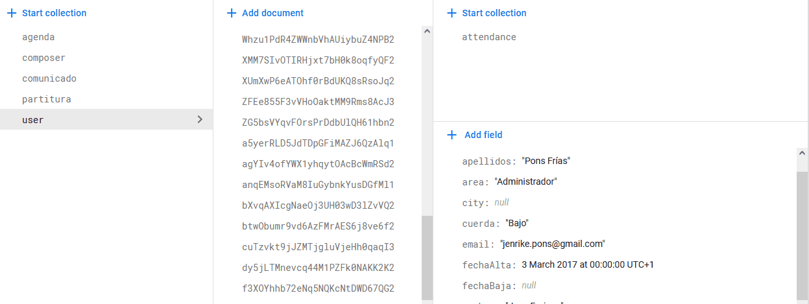
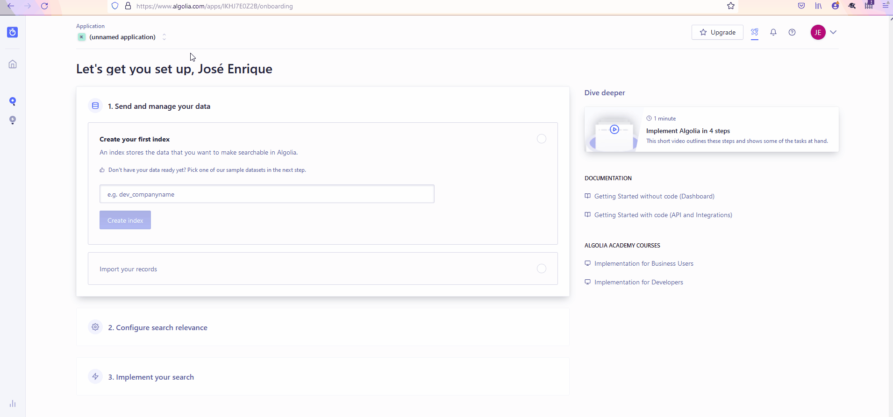
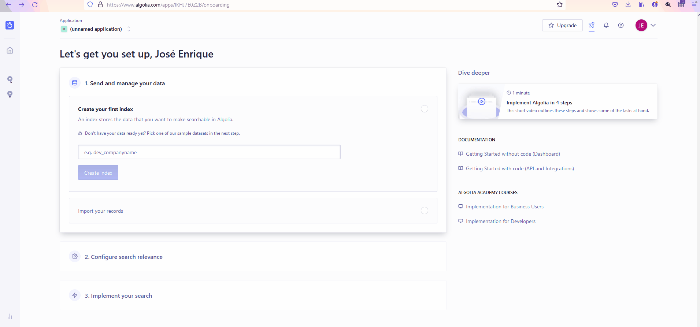
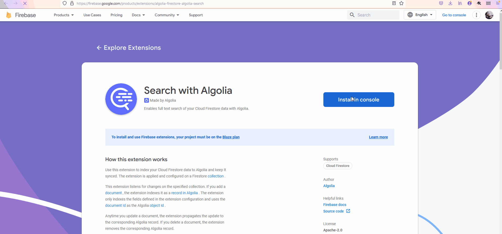
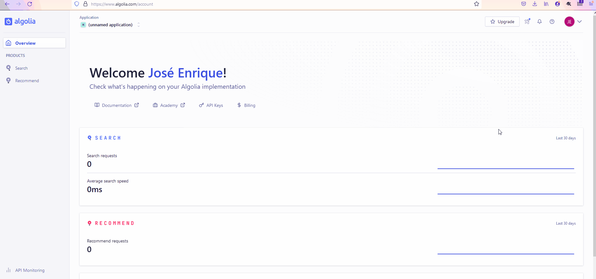
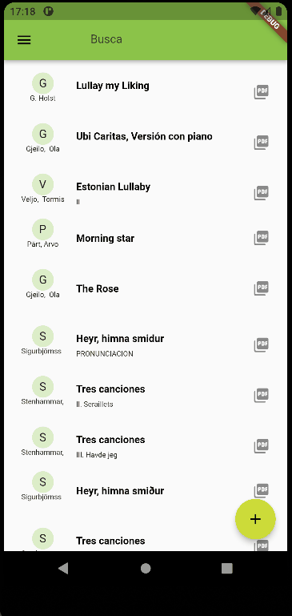

Installing Algolia as a search engine for firebase
Firebase is a very popular service from Google. They provice authentication services, cloud databases, analytics for your apps, and there is a really cool integration with Dart/Flutter.
We are using a document database called Firestore.
It’s a cool document database, with some similar concepts to MongoDB, in the sense it groups the elements o the database in documents and collections. What’s different is the grouping of these elements.
First, you define a collection which contains documents. Each document may, at the same time contain attributes and collections.
For instance, my user collection contains a set of documents representing each a user. To register the attendance, each user contains a collection with its own attendances (instead of having an attendance collection and somehow linking the collection to the user).

In the image, you see, that the user collection, contains documents with the info of each user. The so-called attributes like the user name, email, and so on. But at the user level, that’s at the level of the attributes, you can define collections, in this case a collection for the attendance with a set of attributes.
The problem with this way of organizing the information, compared to the typical canonical, relational table shape, is the way to query the information.
How to query? The search functionality provided with Firestore is quite limited..
The set of limitations as described in the previous link are the following:
Query limitations
The following list summarizes Cloud Firestore query limitations:
- Cloud Firestore provides limited support for logical OR queries. The in, and array-contains-any operators support a logical OR of up to 10 equality (==) or array-contains conditions on a single field. For other cases, create a separate query for each OR condition and merge the query results in your app.
- In a compound query, range (<, <=, >, >=) and not equals (!=, not-in) comparisons must all filter on the same field.
- You can use at most one array-contains clause per query. You can't combine array-contains with array-contains-any.
- You can use at most one in, not-in, or array-contains-any clause per query. You can't combine in , not-in, and array-contains-any in the same query.
- You can't order your query by a field included in an equality (==) or in clause.
- The sum of filters, sort orders, and parent document path (1 for a subcollection, 0 for a root collection) in a query cannot exceed 100.Algolia to the rescue
One of the limitations is full text search for a given attribute. That is, we can’t search for all users starting with Jos.
We can configure Algolia community edition with our Firebase project to run queries like this. The process is as follows: - First, register in Algolia and create a free account. - Create an Algolia application and an index name. - Next, add the Algolia extension to your project. - After the extension is installed, you will find a cloud function that is triggered every document update. But, if your Firestore database has already some data, you have to create another cloud function (that will be triggered maybe just once) to send all your initial data to Algolia index. Some tips for that cloud functions are here
Create an Algolia application and an index name.

Obtain the API key

Add Algolia extension to your firebase project


Export all records: https://discourse.algolia.com/t/export-all-records-from-firestore-to-indices-with-google-cloud-function/10358/3
Implementation in flutter https://www.algolia.com/doc/guides/building-search-ui/getting-started/how-to/flutter/ios/
Some references:
https://www.algolia.com/doc/api-reference/api-methods/save-objects/#examples
https://www.algolia.com/doc/api-client/getting-started/install/javascript/?client=javascript
Code to generate the index for the first time:
exports.index_all_sheets = functions.runWith({
allowInvalidAppCheckToken: false, // Opt-out: Requests with invalid App
// Check tokens continue to your code.
}).https.onCall((data, context) => {
const algolia = algoliasearch("projectID",
"secret");
const index = algolia.initIndex("sheetIndex");
functions.logger.info('indexing all sheets');
let records = [];
admin.firestore().collection("partitura")
.get().then((docs)=> {
docs.forEach((doc)=>{
const obj = doc.data();
obj.objectID = doc.id;
obj.path = 'partitura/'+doc.id;
obj.compositor = doc.compositor;
obj.compositor = doc.obra;
records.push(obj);
functions.logger.info('indexing doc');
});
functions.logger.info('fetch completed');
index.saveObjects(records).then(({objectIDs})=>{
functions.logger.info("indexing completed", objectIDs);
});
});
return true;
});Installing Algolia in Flutter project
The first step is to add the Algolia library in your flutter project. You can do so installing the package.
flutter pub add algoliaThere are other options, but this one is the fastest for me. Next, I’m going to create an algolia_options.dart file to store the api key (in the same fashion as the Firebase Options).
import 'package:algolia/algolia.dart';
class AlgoliaOptions {
/// The API key that is used to identify an instance of algolia
final String apiKey;
/// The application Id in Algolia
final String applicationId;
const AlgoliaOptions({required this.apiKey, required this.applicationId});
static const AlgoliaOptions algoliaOptions = AlgoliaOptions(
apiKey: "xxxxxxxx2", applicationId: "AAAAAAAAAB");
}the values of the api key and appId can be found in your Algolia settings page.
Now, I’m going to write the code to search using the algolia index created in the previous steps. First, in the state class I create a private attribute called _algoliaClient
class _PartituraScreenState extends State<PartituraScreen> {
final Algolia _algoliaClient = Algolia.init(
applicationId: AlgoliaOptions.algoliaOptions.applicationId,
apiKey: AlgoliaOptions.algoliaOptions.apiKey);
TextEditingController _textFieldController = TextEditingController();I’m adding a text controller for the filter. I’m also creating a proxy class for the Sheet class:
class SheetProxy {
final String id;
final String obra;
final String compositor;
SheetProxy({required this.id, required this.obra, required this.compositor});
static SheetProxy fromJson(Map<String, dynamic> json) {
final String id = json['path'].toString().split("/")[1];
return SheetProxy(
id: id, obra: json['obra'], compositor: json['compositor']);
}
}The function to search the elements is the following, that maps the content to the SheetProxy instance.
Future<void> _getSearchResult(String query) async {
AlgoliaQuery algoliaQuery =
_algoliaClient.instance.index("sheetIndex").query(query);
AlgoliaQuerySnapshot snapshot = await algoliaQuery.getObjects();
final rawHits = snapshot.toMap()['hits'] as List;
final hits =
List<SheetProxy>.from(rawHits.map((hit) => SheetProxy.fromJson(hit)));
setState(() {
_sheets = hits;
});
print(rawHits);
}Finally, on the init state, we add a listener to the text field controller:
@override
void initState() {
super.initState();
_textFieldController.addListener(() {
if (_query != _textFieldController.text) {
setState(() {
_query = _textFieldController.text;
});
_getSearchResult(_query);
}
});
_getSearchResult('');
}The application with the filtering looks like this:
